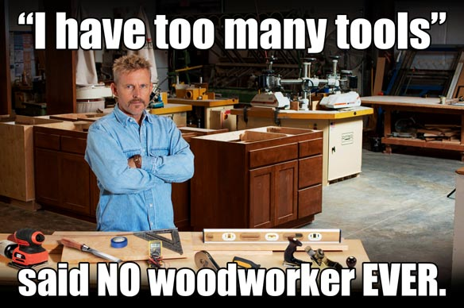

The tool shouldn't matter
Why is it that thought leaders in this field care so much about the tools that you use to solve problems with GIS? The argument for the use of Esri versus non Esri software seems to never get old on social media. There's an unspoken undercurrent frustration with commercial GIS Software. The title of this blog is "the tool doesn't matter". That means that the road that gets you to the solution shouldn't matter as much as the problem you're trying to solve and the solution that you came up with. Over the past two weekends I've been installing wood floors in my house. Depending on who I talked to, I would need "just a table saw". Another trusted person told me that I could get everything done with a chop saw and a jig saw. To undercut my door jams, I could use a trim saw, a double sided pull saw or an oscillating multitool with an undercut attachment. These "right tools" would vary depending on who I talked to and what they thought was right for them. But my real friends would preface, "you'll find what's right for you".
In the end, I installed the floors my own way... I used a sliding miter saw to chop, a circular saw to rip boards, and an oscillating multitool to undercut. When I was done with the floors and showed the product to my friends, they did ask questions as to which tools I used to get the job done, but there was no judgement. In the end, they ultimately judged the result. Use what's right for you and you're ultimately judged on your craftsmanship, not on the brand of tool you used.
In a converse, analagous fashion, why are so many people in Geo so fixated on whether you're using ArcGIS, or qGIS or R or Python? Alternatives are great to the norm (like Nirvana in the 90's), but does that mean that you're only cool if you embrace the alternative? There's no need to become a judgemental zealot to get everyone to believe what you think. Rather, why don't you spend more time creating products, rather than judging how someone else might have created theirs?
Don't get me wrong, I'm extremely bullish on Open Source and commercial alternatives-- they will provide more substance to one's experience and resume. They will also make you more flexible with your approach. Conversely, so will peppering your stack with some trusted commercial solutions if you claim to be an Open Source shop.

The times are changing, Boundless Geo was just awarded a huge contract for the NGA-- ya know, that agency that has been known in headlines as the Agency that's more powerful than the CIA that you've never heard of.. So tides are certainly shifting, organically. They can't be forced. So there's no reason to judge. Instead, sit back and enjoy the options we have to get the job done.
The product of the tooling should be the main thing that matters. This isn't an argument on coding versus button pushing. Given that mostly all data and technology, (spatial is included here) has been democratized and commoditized, I think most traditionally schooled GIS folks should learn to code for web development (JavaScript) and or general purpose (python), and if you code using api's maintained by a (heaven forbid) proprietary for profit enterprise, you shouldn't be ashamed.
That's why I like The Spatial Community on Slack, they've got channels for whatever suits your fancy spatially.